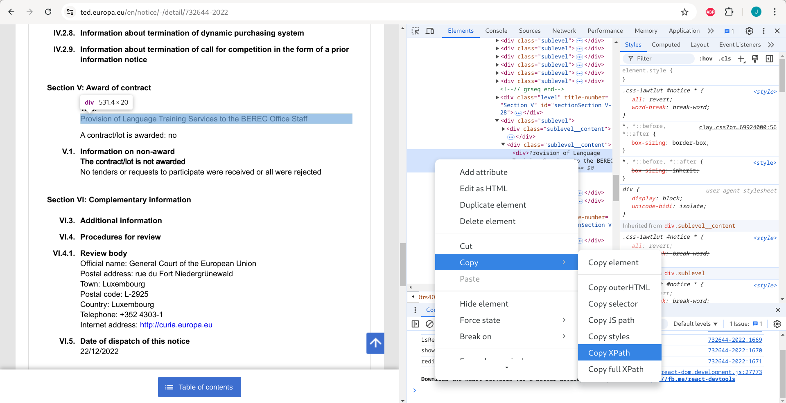

A guide to webscraping using python + selenium
Surge in New Data Sources
Modern statistics used in research isn’t much different than what it was seventy years ago. Richer sources of data and exponentially better computational power, however, have changed the way we do research. Typical data used in social science research comes from official sources. In developing countries like India, the official data is often released with delays or is not measured at all. Private data firms have started filling this gap by providing richer and high-frequency data. In both cases, the data is structured- documentation on survey design, weighting, and variable description is available. The researcher has to simply download and clean this data to find insights.
Some interesting non-traditional data sources have become feasible for research. Improved optical character recognition (OCR) softwares have made it easier to digitize historic physical records and convert them into modern spreadsheets. Usage of open-access granular satellite data has become popular because individual persons or governments cannot tamper with data collection, and it is collected at high frequencies.
Then there is unstructured data. Think of product reviews on Amazon’s website. The website can process unformatted text from several reviews and generate a summary of sentiments and most relevant phrases. Political analysts and marketing folks use similar unstructured text data from social media platforms to analyse user sentiments on the topic of interest. Further, there is semi-structured data. This is data spread over several pages of a website. There is a pattern in which each page of this website stores information, but it can’t be downloaded directly (no API access either). You will then use webscraping techniques to create a structured spreadsheet out of this website’s content. The webscraping process is the topic of this blog.
Choice of tools: Python with Selenium
Selenium belongs to the web-developer’s toolkit, but is integral to the webscraping process where human inputs are required. Technically, scraping a webpage should be the following simple steps: go to the webpage, parse its contents, store the relevant elements (typically as a dataframe). However, you may not have the direct link (url) to the website. You have a mental algorithm instead: go to a site, input text in the search bar, click ‘search’, visit every link on the results page and store relevant elements. Everything that needed human inputs (clicking, typing text) can be automated using selenium, making it a powerful scraping tool.
Selenium can be used with many programming languages. Python is the choice here because of large online support materials available, especially for webscraping projects.
Technical Prerequisites:
To proceed, make sure that a recent version of python3 is installed. Selenium uses a web-browser for the automation. This requires you to install a web-browser and the driver for it (version of the browser and the driver should be matching). For instance, I am using Google Chrome as the browser with ChromeDriver version ‘128.0.6613.119’. Lastly, ensure that ChromeDriver is located on your python environment.
Introduction to XPATH
Elements of a webpage can be uniquely identified using xpaths. The xpath points Selenium to the precise location on a webpage (a button, a search box, etc.). One way to familiarize yourself with these is to right-click on your webpage and select ‘inspect’. In the image below, I have opened a page with some information about a tender from the European Union. The ‘inspect’ option opens the whole page’s structure on the right side. You can then copy the xpath.

Let’s try to scrape information on the ‘Title’ (Section 5) from the webpage in the above image. The code chunk below makes use of the website url and the xpath that you just copied to scrape the element (Title) and store it in a dataframe.
#### importing libraries
import pandas as pd
from selenium import webdriver
from selenium.webdriver.common.keys import Keys
from selenium.webdriver.common.by import By
from selenium.common.exceptions import NoSuchElementException
from webdriver_manager.chrome import ChromeDriverManager
url = "https://ted.europa.eu/en/notice/-/detail/732644-2022"
driver = webdriver.Chrome()
rows = []
driver.get(url)
print(url)
driver.implicitly_wait(5)
title = driver.find_elements(By.XPATH, '//*[@id="notice"]/div[35]/div[2]/div')[0].text
row = {'url':url,
'title':title}
rows.append(row)
driver.close()
### Make into a dataframe
df = pd.DataFrame(data= rows)
dfThe output should look like this:
You just scraped one element from a webpage and stored it as desired. This is the most basic use of the webscraping technique. Note, however, that the xpath copied is specific to the particular page. If you replace the url with this url, your code will scrape something else instead of the ‘Title’. So if you have a list of 100 urls corresponding to a 100 contracts from the website in the example, this code will certainly break. The way forward is to write generic xpaths in your code.
Generic XPATHS
This YouTube video is a must watch, to master writing generic xpaths. I found the following to be the most useful (Cheatsheet):
- understanding xpath syntax (tag, attribute)
- using multiple logical conditions (and, or)
- going from child to parent; parent to child
- handling cases when one xpath gives multiple outcomes
- useful functions (contains, starts with, table, count, ignore cases)
If you can write generic xpaths, the most critical part of your webscraping learning has been accomplished. Next, we will deal with a more realistic scenario: you have a list of urls, and for every url you need to scrape an element.
Efficient for loops
For loops are familiar territory for Python users. You will naturally use them to scrape from a list of urls. Let’s scrape a different element (number of tenders received) from a list of five urls.
### Load libraries
import pandas as pd
from selenium import webdriver
from selenium.webdriver.common.keys import Keys
from selenium.webdriver.common.by import By
from selenium.webdriver.chrome.service import Service
from selenium.webdriver.chrome.options import Options
from webdriver_manager.chrome import ChromeDriverManager
### Scrape data from five urls
urls = ["http://ted.europa.eu/udl?uri=TED:NOTICE:278789-2019:TEXT:EN:HTML",
"http://ted.europa.eu/udl?uri=TED:NOTICE:238723-2018:TEXT:EN:HTML",
"http://ted.europa.eu/udl?uri=TED:NOTICE:409966-2019:TEXT:EN:HTML",
"http://ted.europa.eu/udl?uri=TED:NOTICE:419164-2018:TEXT:EN:HTML",
"http://ted.europa.eu/udl?uri=TED:NOTICE:008451-2018:TEXT:EN:HTML"]
driver = webdriver.Chrome()
rows = []
for url in urls:
try:
driver.get(url)
driver.implicitly_wait(5)
num_tenders = driver.find_elements(By.XPATH, "//span[@data-labels-key='ted_label.2014_common|offers_received']/..")[0].text
row = {'url':url,
'num_tenders':num_tenders.partition("Number of tenders received: ")[2].partition("\n")[0]}
rows.append(row)
except:
try:
num_tenders = driver.find_elements(By.XPATH, "//span[@data-labels-key='ted_label.2014_common|award_no_tenders']")[0].text
row = {'url':url,
'num_tenders':num_tenders}
rows.append(row)
except:
try:
num_tenders = driver.find_elements(By.XPATH, "(//span[@class='timark bold']/..)[6]")[0].text
row = {'url':url,
'num_tenders':num_tenders.partition("6. Number of tenders received")[2].partition("\n")[2]}
rows.append(row)
except:
print(url)
continue
driver.close()
### Make into a dataframe
df = pd.DataFrame(data= rows)
dfThe output will look as follows:
Tips for efficient for loops
- Use of ‘continue’:
- if there is an exception, continues the loop without breaking the code.
- Use of ‘print(url)’:
- when there is an exception and the loop moves on, it is good to see why it has moved on, and for which urls that is the case. This is helpful while debugging the code.
- Use of nested try/except conditions:
- Sometimes one element can be accessed by different xpaths. If the first xpath doesn’t fetch the desired element for you, the subsequent xpaths will! And you will notice the need to add that second xpath only when you are printing and examining the urls where your code is raising an exception (and continuing).
- Adding an implicit/explicit wait condition:
- Sometimes an exception error is raised simply because the page had not loaded and the code tried to extract the element. A wait condition solves this issue.
- You don’t want to overload the server with requests. They are designed to deal with human speeds of webpage interaction. It’s better to put in a wait condition than have an annoyed IT person blocking your IP address.
That’s it!
What I have shared here are some useful things I picked up along my webscraping journey. You may learn additional tricks and create workflows that better suit your webscraping task. For whatever this was worth, I hope you found it useful!